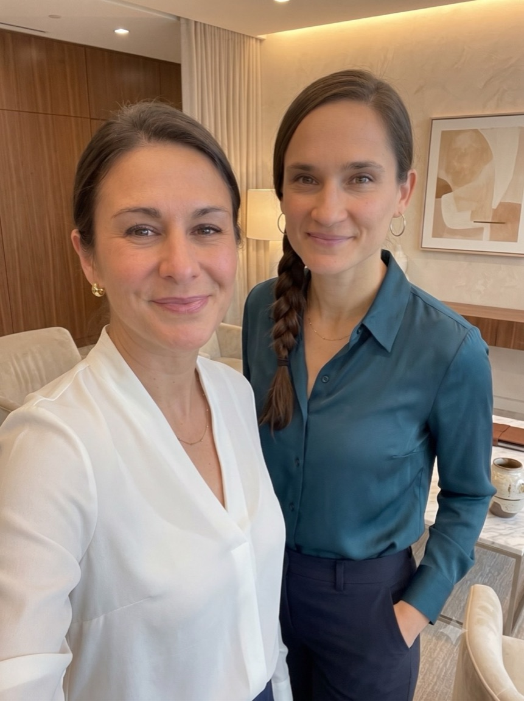

Craft is not nostalgia.
It’s a method.
We exist to give endangered crafts a vital, modern role, as the most human way for teams and individuals to reconnect, refocus and grow.
Two paths, one workbench.
We’re Alice and Janina, and craft is at the heart of everything we do.
Since 2018, Janina has hosted more than twenty creative workshops across Europe, bringing people together through hands-on making. Alice has built relationships with over sixty artisans across the Maghreb through her brand Faridique, and brings a background in coaching and organisational work.
Crafted Visions was born where those paths crossed: what if people could experience craftsmanship at its source, and what if the wisdom inside these crafts could be paired with professional coaching methodology to transform how teams work and how individuals feel?
That’s what we build, workshop by workshop, in Tunis.
– Alice & Janina

Every craft we teach is one generation from silence.
The bookbinder we work with is one of the last in Tunis. The looms, the kilns, the reed pens: they survive only as long as someone keeps working them, and someone keeps paying for that work.
We refuse to treat these crafts as museum pieces. In a high-speed, AI-shaped world, their qualities (patience, precision, presence, making one good thing well) are exactly what modern people and modern teams are missing. So we put them to work.
Three values, no compromises.
Transformative
Not entertainment with a cultural garnish. Every format is designed (with coaching methodology) so that teams and individuals leave different than they arrived.
Creative
Traditional craft, given a modern touch. Real ateliers, real material, real mastery, arranged into experiences you won’t find anywhere else.
Authentic
No staged folklore. You work beside artisans in their own studios, at the rhythm of their craft, and your booking supports them directly.


Experience it yourself.
Bring your team for an experience they’ll still talk about in a year, or book a workshop and slow down for an afternoon.